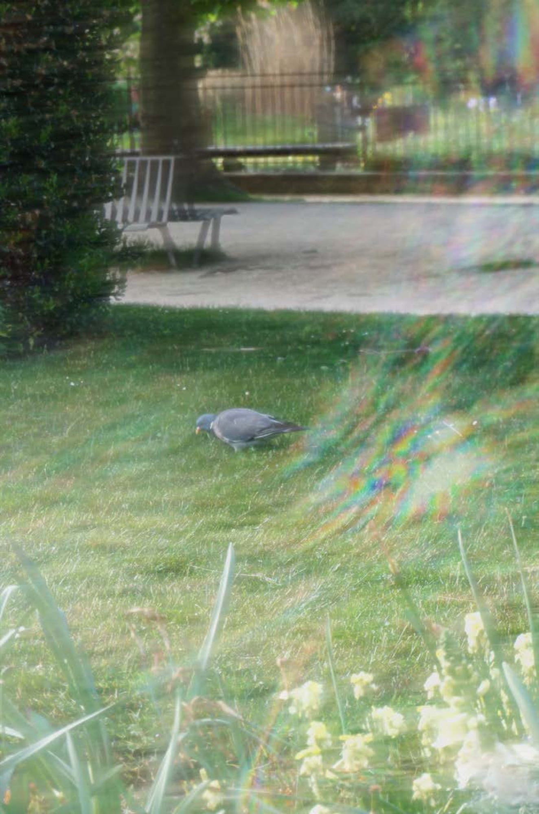
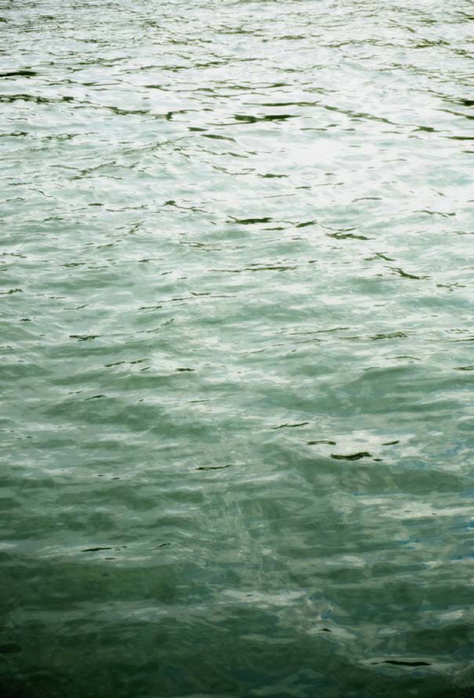

Color GradingPhotography, color grading
Color GradingPhotographie, étalonnage des couleurs
Photography, color grading
Photographie, étalonnage des couleurs



 PHAM Nhu Quynh
Contact
PHAM Nhu Quynh
Contact